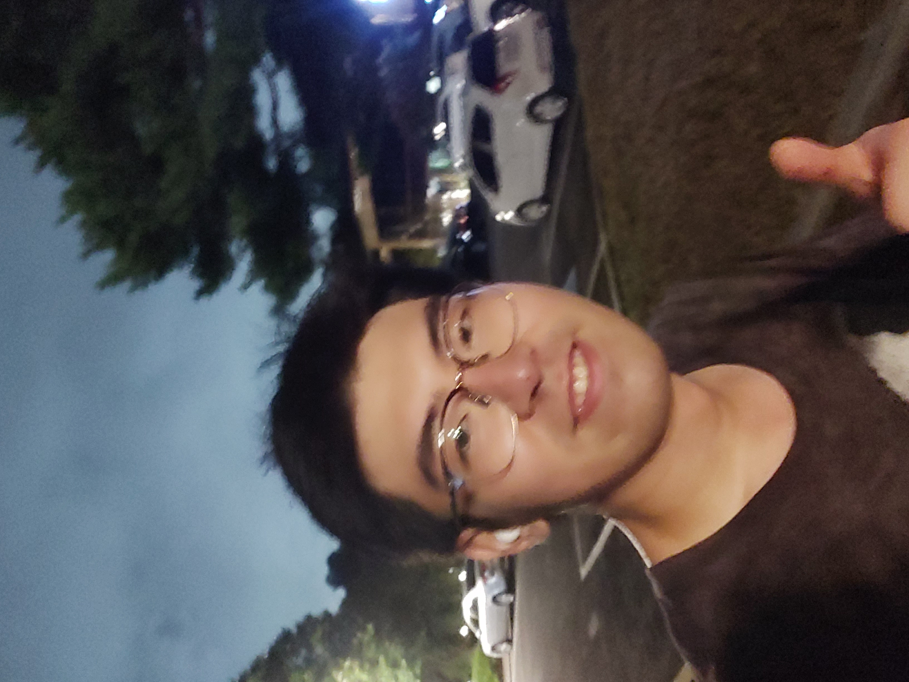

### Welcome to my website! I am a senior student at Pohang University of Science and Technology (POSTECH), majoring in Mechanical Engineering. Currently, I am also a research intern at Future Fluid and Biomimetics Laboratory (FFBL).
My research focuses primarily on biomedical engineering and optics.
I am proficient with Python, MATLAB. For more information about me, please visit the About me and Research sections!